Թեստ 48
30:00
1. "Ճանապարհային երթևեկության անվտանգության ապահովման մասին" ՀՀ օրենքի համաձայն՝ B, C, D կարգերի և C1, D1 ենթակարգերի տրանսպորտային միջոցներ վարելու իրավունքի վկայական ունեցող անձանց թույլատրվում է դրանք վարել նաև կցորդներով, եթե կցորդի թույլատրելի առավելագույն զանգվածը չի գերազանցում`
2. "Ճանապարհային երթևեկության անվտանգության ապահովման մասին" ՀՀ օրենքի համաձայն՝ D, DE կարգերի, D1 և D1E ենթակարգերի տրանսպորտային միջոցներ վարելու միջազգային վարորդական իրավունքի վկայական կարող է տրվել՝
3. Տրանսպորտային միջոցների շահագործումն արգելվում է, եթե՝
4. Տրանսպորտային միջոցների շահագործումն արգելվում է, եթե`
5. Տվյալ իրադրությունում պարտավո՞ր է մոտոցիկլի վարորդը զիջել ճանապարհը։
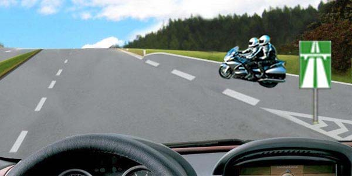
6. Նշաններից ո՞րն է պարտադրում զիջել ճանապարհը հատվող ճանապարհով ընթացող տրանսպորտային միջոցներին:
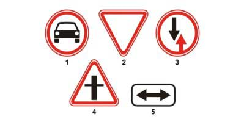
7. Խաչմերուկը երրորդը կանցնի`
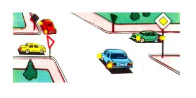
8. Եթե կարգավորողի աջ ձեռքը պարզված է առաջ, ապա նրա ձախ կողմից ոչ ռելսագնաց տրանսպորտային միջոցների երթևեկությունը թույլատրվում է`
9. Ձախ շրջադարձ թույլատրվում է
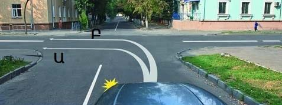
10. Նշանները տեղեկացնում են այն մասին, որ
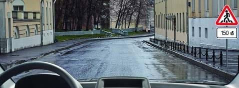
11. Թույլատրվում է արդյոք նշված վայրում հետադարձ կատարել:
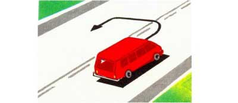
12. Թույլատրվու՞մ է արդյոք մոտոցիկլների քարշակումը:
13. Սև ավտոմոբիլը խաչմերուկը կանցնի`
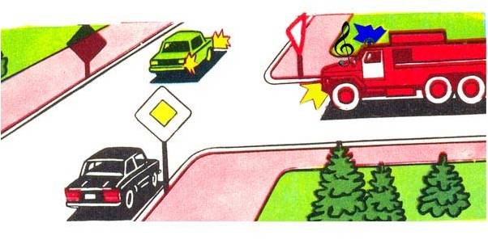
14. Օրվա լուսավոր ժամերին երեխաների կազմակերպված խմբեր տեղափոխելու ժամանակ պետք է միացված լինեն ավտոբուսի`
15. Ո՞ր դեպքում է տեղեկացվում երկու և ավելի ուղիներով երկաթուղային գծանցի մասին
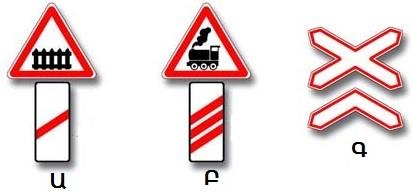
16. Հետադարձ կատարելիս ո՞ւմ պետք է զիջեք ճանապարհը
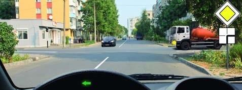
17. Որտե՞ղ պետք է կանգնել լուսացույցի ազդանշանին ենթարկվելով
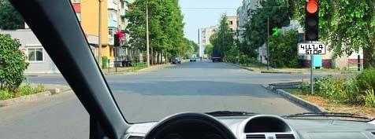
18. Ո՞ր դեպքում է թույլատրվում հատել հոծ գծանշումը
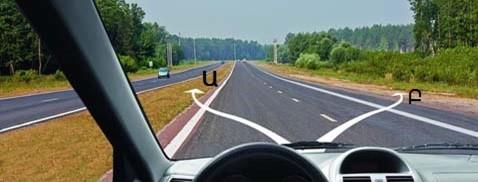
19. Լուսային ցուցիչով ազդանշան տալ նշված իրավիճակում
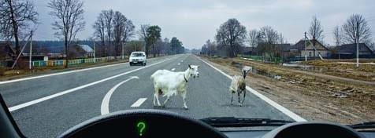